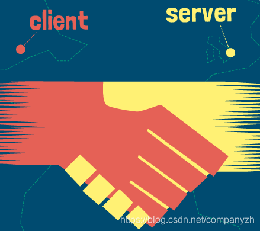
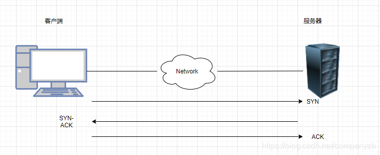
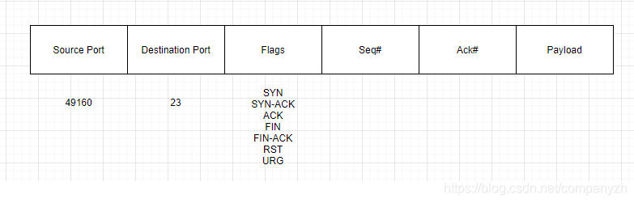
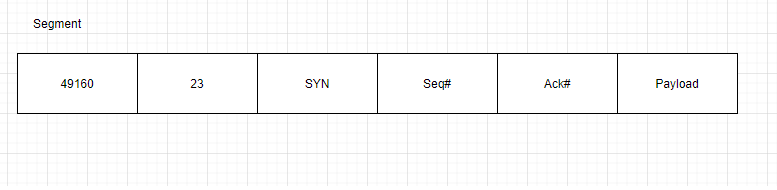
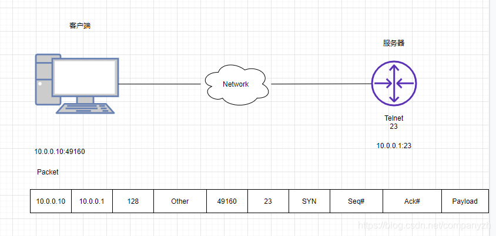

- 01 我应该站在谁的肩膀上 - OSI vs TCPIP模型.md.html
- 02 万丈高楼平地起- 物理层 + 数据链路层.md.html
- 03 OSI的灵魂就是我 - 网络层.md.html
- 04 要快还是要稳你说好了 - 传输层.md.html
- 05 是时候展现真正的技术了 - 应用层.md.html
- 06 重回小学课堂 - 二进制101.md.html
- 07 1+1 = 2吗？ - 二进制的计算.md.html
- 08 16进制又是个什么鬼？ - 16进制的讲解.md.html
- 09 我想有个家 - 什么是IP地址.md.html
- 10 我可是住二环的人 - IP地址的组成和分类.md.html
- 11 我已经没地方住了吗 - IPv6.md.html
- 12 向左还是向右 - IP路由.md.html
- 13 我能给你安全感 - TCP（一）.md.html
- 14 我那不为人知的秘密是什么 - TCP（二）.md.html
- 15 不问收没收到，就问快不快 - UDP.md.html
- 16 我为什么与众不同 - TCP高级篇（拥塞模型）.md.html
- 17 来，先看看我的家谱 - HTTP的身世.md.html
- 18 我都这么成功了，你却说我不行 - HTTP 的特点和缺点.md.html
- 19 我老了，让我儿子来吧 - HTTP2.md.html
- 20 稳重的大外甥 - HTTPS.md.html
- 21 HTTP的高级篇 - HTTPClient（Java）.md.html
- 22 想来我家，你自己查呀 - DNS.md.html
- 23 来的早，不如来得巧 - NAT.md.html
- 24 辛苦的邮政 - SMTP.md.html
- 25 你就是看不见我 - VPN.md.html
- 26 黑客的好帮手 - SSH.md.html
- 27 你可以得到我的心，却得不到我的人 - 物理安全设备.md.html
- 28 你怎么证明你就是你 - 身份验证和访问控制.md.html
- 29 我要怎么藏好我的考研资料 - 网络攻击（一）.md.html
- 30 我要怎么藏好我的考研资料 - 网络攻击（二）.md.html
- 31 如何保护我的考研资料 - 网络攻击防范.md.html
- 32 Linux网络安全 - 安全实战.md.html
- 33 结语.md.html
13 我能给你安全感 - TCP（一）
不知不觉我们已经来到了第四部分，这里我们会开始来详细的讲解TCP和UDP，也就是传输层部分。我们首先来看一下协议中的王者TCP。相信你最熟悉的就是三次握手了。
我们上一章详细讲解了IP，也就是第三层网络层的主要协议，现在我们开始看一下传输层的重要协议TCP。
TCP
TCP的全称是Transmission Control Protocol。这个协议的目的就是创建一个Session，通过这个Session来传输数据。
我们在数据链路层查看了源和目标Mac地址，并看到了这些Mac地址是使我们能够将流量从一台设备发送到其自己局域网中的另一台设备。我们又看了网络层，也就是IP，了解了网络层的地址如何使我们能够从一个网络上的一个设备与世界其他地方的另一个设备进行通信。现在又到了TCP，TCP所要做的就是允许我们在网络上的两个设备之间创建会话，然后通过这个会话来传输数据。
我们现在来看看它是如何工作的。TCP使用一种称为客户端服务器模型的东西。比如我有一台PC或一个客户端，和一个Web服务器。我的客户端被认为是客户，因为运行某一种Web浏览器比如Chrome或者FireFox。这个Web浏览器就是一个HTTP的客户端。（HTTP超文本传输协议是我们用于传输Web页面的协议)。在HTTP的服务端需要有完全不同的软件在运行，也就是我们说的服务器，服务器是有很多的选择，比如Apache是一个非常流行的开源Web服务器。当然还有老牌的微软IIS等等。现在这里要做的就是客户端看做是一个设备说“你能给我发送网站吗？”。服务器会回答说，给你，这是你要的网站”。但是我们使用的是倒叙模式，在我们能够做到这一点之前，我们必须在两方之间建立一个会话。

三次握手和四次挥手

通过我这个灵魂画手的画作，你应该可以看出三次握手的精髓，那就是客户端会先向服务器端发送一个SYN，然后服务器端会发送回一个SYN-ACK。（ACK一般表示收到）然后客户端会再回复一个ACK。经过了三次通信也就是三次握手之后，这才能建立起连接，说明双方都没有问题，可以开始唠嗑了。就好像我们之前的例子还是美国队长和黑寡妇姐姐唠嗑。聊完之后。不能突然就断开了吧。这样太没有礼貌了。所以需要经过一个流程也就是我们说的四次分手。这是一个非常优雅的过程。首先服务端会发一个FIN消息。然后客户端回一个FIN-ACK。然后客户端会发送一个自己的FIN 消息。然后服务器发送一个FIN-ACK。这样双方就终止了通信。就好像黑寡妇姐不想和美国队长说话了，她会说，我要去给绿巨人做饭了，BYE BYE，然后美国队长会说，好您了，收到。那我也去给小美队抱孙子去了（这是两条消息），黑寡妇说，好的，您快去吧。这样两人就挂断了通信。这样是不是很容易理解。当然4次分手不是唯一的断开的方式。还有一种方式叫做Reset。
我们把整个的通信过程退后两步来看。想象一下客户端只是向Web服务器询问该网页。服务器回应说，这是网页。现在可能发生的事情是，任何时候任何一端都可以发送TCP重置消息（reset）。为什么它会发送TCP重置消息而不执行四次分手呢？因为有时我们可能在PC和Web服务器之间安装了一个安全设备，如果网络中发现某些不应该在网络上传入和传出的内容（比如小电影，一不小心就飙车了，但是开车犯法呀，切记）。这些设备的安全措施可能会发送TCP重置。该设备通常被编程为发送TCP重置并仅关闭两个设备之间的通信，所以这种情况的发生是很不友好的。其中一端（在这种情况下可能是Web服务器）将发送TCP重置。一旦这个客户收到了RST，连接就会立即关闭。我们将无法再发送数据。哪端都可以发送这个RESET。任何时候都可以。完全取决于你使用的软件。还是看我们的例子。美国队长和黑寡妇聊天，但是呢黑寡妇的老公在另一个房间默默的拿起了电话在监听，这时候美国队长和志玲姐姐开个玩笑，你的内衣真好看。绿巨人觉得你怎么可以开车，和美国队长说了一句，你给我滚（RST），然后就挂断了。这样是不是更容易理解。（这些只是开玩笑的例子呀，不要当真，是为了加深你的理解，如果你是任何一位的粉丝，有冒犯到，我提前说个对不起呀）。
端口号
我们看传输层寻址之前再来穿插一下端口号（我的思维就是这么活跃）。
端口号的范围从0到65535，通过端口号被分为三个不同的类别。
- 公认端口（Well-Known）0-1023
- 注册端口（Registered）1024-49151
- 临时端口（Ephemeral）49152-65535
服务器端口号是为非常特定的服务器应用程序层协议设计的。客户端的这些临时端口号主要用于一个会话的临时时间段，然后可以将该端口号扔掉或放回池中，以后我们可能会也可能不会重复使用该端口号。这些客户端端口号将在我们网络上的不同TCP会话中重复使用。
你想一下，你所熟悉的公认端口号有哪些？
- HTTP - 80
- HTTPS - 443
- FTP - 20,21
- SSH - 22
- Telnet - 23
公认端口
这些端口已经存在很长时间了，是经过实践检验的协议，所以称为公认端口。诸如Http使用端口80，https（这是HTTP的加密版本，使用443）。FTP，出于不同的目的使用了两个不同的端口号，这使它使用起来有点麻烦和复杂，尤其是对于通过防火墙。SSH，使用端口22。Telnet使用端口23。当然还有很多就不一一列举了。
注册端口
然后是注册端口，它们可以是官方的也可以是非官方的。官方的意思就是该自定义应用程序的组织已经将使用的端口号注册到了Internet Assigned Numbers Authority（IANA）。比如微软的Microsoft Windows Internet Name Service (WINS)。它就是注册了端口号1512。还比如Cisco HSRP或者叫做Hot Standby Router Protocol注册了端口号1985。以及Microsoft Point-to-Point Tunneling Protocol (PPTP)点到点协议注册了1723。这三个例子都是正式注册的端口号。
还有另一种程序当然就是非官方的，比如游戏Civilization（文明）。使用的就是端口号2033。这意味着我们知道这个游戏将使用这个端口，但尚未正式注册。这是否意味着我们不能使用它了呢？当然不是。我们可以使用它。我们只需要知道某个特定的程序会使用它即可。
所有这些公认和注册的端口号会赋给应用层上的程序。服务器会监听这些端口号。
我们还是用例子来讲解。看下图。

我有一个PC的服务端在左边，右边我放一个路由器，在这个路由器端，我配置的服务器是telnet，将路由器配置为服务器似乎有点奇怪。但是，在进行TCP通信时，请记住，我必须有一个设备作为客户端，而另一个设备必须是服务器。所以，为了使我的客户端可以Telnet到Router上，我必须在路由器上启用Telnet服务或者设置Telnet服务器。PC端我将使用我们熟悉的Putty作为客户端来访问。现在这个路由器一直在监听端口23，客户端将选择一些临时端口号（比如49160）用作其在传输层的源端口地址。我现在想将消息从客户端发送到服务端。我要使用源端口49160和目标端口23（代表Telnet）。这个时候需要做的是建立一个Segment也就是协议数据单元。

从上图可以看出，这个数据单元里包含一个源端口，一个目的端口，一些标志，一个序列号，一个确认号，然后是我们的有效负载。在那个标志的地方就是我们要发送的信息，还记得前面握手和分手时候发送的SYN，ACK等等吗？然后我们的客户端要发送这个给Router，其实协议数据单元只是包裹的一部分。看下图我们来认识一下，要发送的数据单元是什么样子。

而这个数据单元实际上只是包裹（Packet）的一部分。

从图上你可能会注意到我使用的地址是10.0.0.10:49160和10.0.0.1:23这个就是我们所说的Socket，Socket就是IP地址和端口号的组合。我们下一步是要把我们的Packet做为一部分放到Frame里，然后发送出去。然后路由器也就是服务器那边会像剖洋葱一样，一层层的剖开，把Packet从Frame里取出，再把Segment从Packet里取出。然后再做出一个类似的动作，形成一个新的Segment，Packet，Frame然后再发送给客户端。。。这样是不是就形成了三次握手。然后就可以开始传输数据了。听我这么讲完，是不是不仅仅知道了三次握手，还知道了应该怎么握手，以及握手前有没有洗手。